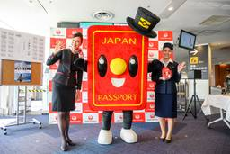
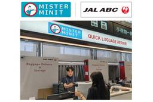
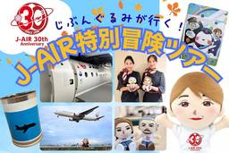
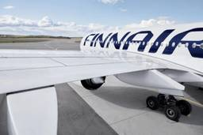

AIRLINE web -月刊エアライン×航空旅行-
https://airline.ikaros.jp
飛行機の運航を支える最前線、魅力あふれる空の旅のサービス、飛ぶためのテクノロジーやエアライン・空港の最新ビジネス動向、飛来機の撮影＆投稿など趣味として楽しむ航空の世界まで幅広く情報をお届けします。
フィード

JALと外務省、パスポート発給160周年記念イベント開催、値下げ直後は申請者が前年比2～3倍
AIRLINE web -月刊エアライン×航空旅行-
JALと外務省がパスポート発給160周年記念イベントを開催。 JALと外務省は10月17日、羽田空港第1ターミナルの11番搭乗ゲート前で「パスポート発給160周年記念イベント」を開催した。 これは1866年（慶応2年 […]The post JALと外務省、パスポート発給160周年記念イベント開催、値下げ直後は申請者が前年比2～3倍 first appeared on AIRLINE web -月刊エアライン×航空旅行-.
20時間前
ジャルパック、「ハワイズハーフマラソン ハパルア2027」専用ツアーを発売。現地サポート付き
AIRLINE web -月刊エアライン×航空旅行-
ジャルパック（JALPAK）は、2027年4月11日にホノルルで開催される「ハワイズハーフマラソン ハパルア2027」の専用ツアーを発売した。ランナーが安心して走りに集中できるよう、利便性の高いホテル手配から充実した現 […]The post ジャルパック、「ハワイズハーフマラソン ハパルア2027」専用ツアーを発売。現地サポート付き first appeared on AIRLINE web -月刊エアライン×航空旅行-.
2日前
チャイナ エアライン、丸福珈琲店コラボ機内食を年末まで延長
AIRLINE web -月刊エアライン×航空旅行-
機内食イメージ。 チャイナ エアラインは、大阪・関空＝台北・桃園線の就航20周年を記念して今年7月に始めた、丸福珈琲店とのコラボレーションについて、年末まで継続する。1934年に大阪で創業した喫茶ブランドの味を関西発便 […]The post チャイナ エアライン、丸福珈琲店コラボ機内食を年末まで延長 first appeared on AIRLINE web -月刊エアライン×航空旅行-.
2日前
関西国際空港第2ターミナルのフードコートに、新たに2店舗がオープン
AIRLINE web -月刊エアライン×航空旅行-
新規出店する「ラーメンBOX」、「ごっつええ本舗」と先行オープンしている「かごの屋」、「あずさ珈琲」。 関西国際空港第2ターミナル（国内線）にて、「ラーメンBOX」、「ごっつええ本舗」が10月15日にオープンした。第2 […]The post 関西国際空港第2ターミナルのフードコートに、新たに2店舗がオープン first appeared on AIRLINE web -月刊エアライン×航空旅行-.
2日前
シンガポール航空、機内ダイニング体験を刷新。全クラスに100種以上の新メニュー導入
AIRLINE web -月刊エアライン×航空旅行-
First Class Dining メニュー。 シンガポール航空は、全客室クラスを対象に100種類以上の新メニューおよび刷新したメニューを導入するとともに、ドリンクの拡充や上質なサービスを取り入れ、機内ダイニング体験 […]The post シンガポール航空、機内ダイニング体験を刷新。全クラスに100種以上の新メニュー導入 first appeared on AIRLINE web -月刊エアライン×航空旅行-.
2日前
ANAグループが本社移転。現在の汐留から、八重洲と田町へ
AIRLINE web -月刊エアライン×航空旅行-
ANAホールディングスとANAは10月16日、現在、汐留シティセンターに置く両社の本社機能を移転することを発表した。2030年春頃を目途に、東京都中央区八重洲2-4～7に位置する「八重洲二丁目中地区第一種市街地再開発事 […]The post ANAグループが本社移転。現在の汐留から、八重洲と田町へ first appeared on AIRLINE web -月刊エアライン×航空旅行-.
2日前
「ちいかわ×ANA」オリジナルグッズ第1弾が10月23日より順次発売。ANA FESTA羽田店はちいかわ仕様に
AIRLINE web -月刊エアライン×航空旅行-
「ちいかわ×ANA」オリジナルグッズ第1弾。 全日空商事株式会社は、特別デザイン機「ちいかわジェット」の就航を記念し、ANAの制服を着た、ちいかわの特別デザインのコラボレーショングッズ第1弾を10月23日より順次発売す […]The post 「ちいかわ×ANA」オリジナルグッズ第1弾が10月23日より順次発売。ANA FESTA羽田店はちいかわ仕様に first appeared on AIRLINE web -月刊エアライン×航空旅行-.
3日前
J-AIR、後継機としてエンブラエル190-E2導入を決定
AIRLINE web -月刊エアライン×航空旅行-
J-AIRが後継機としてE190-E2導入決定。 JALは10月14日、J-AIRの機材として、エンブラエル190-E2（E190-E2）の導入を決定した。確定発注16機、オプション10機の計26機を発注し、2029年 […]The post J-AIR、後継機としてエンブラエル190-E2導入を決定 first appeared on AIRLINE web -月刊エアライン×航空旅行-.
4日前
JAL、広島空港の夜間駐機機内でクラシック演奏会、JMB会員を招待
AIRLINE web -月刊エアライン×航空旅行-
「秘密のミッドナイトステージ」。 JALと広島空港は、夜間駐機中のJAL機内を会場にした特別演奏会「秘密のミッドナイトステージ」を2027年3月20日に開催する。JAL広島線の利用者を対象としたキャンペーンの賞品として […]The post JAL、広島空港の夜間駐機機内でクラシック演奏会、JMB会員を招待 first appeared on AIRLINE web -月刊エアライン×航空旅行-.
5日前

JAL ABC、修理ブランド「ミスターミニット」と提携。関空でスーツケースを即時修理
AIRLINE web -月刊エアライン×航空旅行-
JAL ABCとミスターミニットが業務提携 国内主要空港において空港宅配サービス等を手掛けるJALエービーシー（JAL ABC）と、日本最大級の修理ブランド「ミスターミニット」を運営するミニット・アジア・パシフィックが […]The post JAL ABC、修理ブランド「ミスターミニット」と提携。関空でスーツケースを即時修理 first appeared on AIRLINE web -月刊エアライン×航空旅行-.
5日前

似顔絵ぬい「じぶんぐるみ」が訓練施設や格納庫へ、J-AIRが特別冒険ツアーを開催
AIRLINE web -月刊エアライン×航空旅行-
「じぶんぐるみが行く！ J-AIR特別冒険ツアー」。 J-AIRとFUNDARDは、J-AIR創立30周年記念として「じぶんぐるみが行く！ J-AIR特別冒険ツアー」を共同で企画し、販売する。 このツアーは日々忙しい […]The post 似顔絵ぬい「じぶんぐるみ」が訓練施設や格納庫へ、J-AIRが特別冒険ツアーを開催 first appeared on AIRLINE web -月刊エアライン×航空旅行-.
5日前
深澤 明氏主宰「ド本気講座プレミアム」にチャーリィ古庄氏＆JAL 酒井機長が登場。JAL SKY MUSEUMにヒコーキ愛あふれる
AIRLINE web -月刊エアライン×航空旅行-
「ド本気講座プレミアム × JAL」開催。左から深澤 明氏、JALのボーイング787機長 酒井真比古氏、航空写真家のチャーリィ古庄氏。 AIRLINE Webや月刊エアラインでおなじみの航空写真家・深澤明氏が主宰するヒ […]The post 深澤 明氏主宰「ド本気講座プレミアム」にチャーリィ古庄氏＆JAL 酒井機長が登場。JAL SKY MUSEUMにヒコーキ愛あふれる first appeared on AIRLINE web -月刊エアライン×航空旅行-.
5日前
JALUX、「メゾンカイザー」監修の「クロワッサンラスク チョコレート」を秋冬期間限定発売
AIRLINE web -月刊エアライン×航空旅行-
JALUXは、「メゾンカイザー」監修の秋冬期限定商品「クロワッサンラスク チョコレート」を10月5日より羽田空港 JAL PLAZAで販売開始した。 「クロワッサンラスク チョコレート」は、メゾンカイザーの代表商品で […]The post JALUX、「メゾンカイザー」監修の「クロワッサンラスク チョコレート」を秋冬期間限定発売 first appeared on AIRLINE web -月刊エアライン×航空旅行-.
6日前

フィンエアー、成田＝ヘルシンキ線を増便 2027年夏期は最大週14便
AIRLINE web -月刊エアライン×航空旅行-
フィンエアーは、2027年夏期スケジュールで成田＝ヘルシンキ線を増便する。現在の週7便から5月12日より週10便に増便し、5月17日から8月14日までは1日2便の週14便を運航する予定。成田線では、従来の深夜出発便に加 […]The post フィンエアー、成田＝ヘルシンキ線を増便 2027年夏期は最大週14便 first appeared on AIRLINE web -月刊エアライン×航空旅行-.
6日前
関西国際空港、空の日フェスティバル2026を開催。ブース展開やステージイベント、見学ツアーなど
AIRLINE web -月刊エアライン×航空旅行-
「関西国際空港『空の日』フェスティバル2026」。 関西エアポート、10月24日に「関西国際空港『空の日』フェスティバル2026」を開催する。 「空の日」は、航空に対する理解と関心を高めることを目的として設けられた記 […]The post 関西国際空港、空の日フェスティバル2026を開催。ブース展開やステージイベント、見学ツアーなど first appeared on AIRLINE web -月刊エアライン×航空旅行-.
6日前

あいち航空ミュージアムでスペースジェット搬入イベント、観覧者を募集
AIRLINE web -月刊エアライン×航空旅行-
愛知県は、2026年6月から2027年1月末までリニューアル工事のため休館しているあいち航空ミュージアムにおいて、工事期間中の特別企画として「あいち航空ミュージアムSJ搬入イベント」を開催する。展示機であるスペースジェ […]The post あいち航空ミュージアムでスペースジェット搬入イベント、観覧者を募集 first appeared on AIRLINE web -月刊エアライン×航空旅行-.
9日前
ACIが日本の空港インフラ投資を分析、「2056年までに800億米ドルの投資が必要」
AIRLINE web -月刊エアライン×航空旅行-
Airports Council International Asia-Pacific & Middle East 事務局長のステファノ・バロンチ（Stefano Baronci）氏 Airports Cou […]The post ACIが日本の空港インフラ投資を分析、「2056年までに800億米ドルの投資が必要」 first appeared on AIRLINE web -月刊エアライン×航空旅行-.
9日前
KLMオランダ航空が創立107周年。記念のデルフトブルー・ミニチュアハウスはゼーラント州のワイナリー
AIRLINE web -月刊エアライン×航空旅行-
KLMオランダ航空が、107番目のデルフトブルー・ミニチュアハウスを発表。 KLMオランダ航空は2026年で創立107周年を迎えた。同社は毎年10月7日の創業記念日にちなみ、オランダにゆかりのある特別な建物をかたどった […]The post KLMオランダ航空が創立107周年。記念のデルフトブルー・ミニチュアハウスはゼーラント州のワイナリー first appeared on AIRLINE web -月刊エアライン×航空旅行-.
9日前
JALとANA、航空関連企業による教育プログラムを神戸高専のカリキュラムに新設
AIRLINE web -月刊エアライン×航空旅行-
神戸市立工業高等専門学校（神戸高専）とJAL、ANAは、航空関連企業であるIHI、川崎重工業、ジャムコ、SUBARU、三菱重工業と共同で開発した教育プログラム「航空産業人財育成プログラム」を、同校の「機械システム工学科 […]The post JALとANA、航空関連企業による教育プログラムを神戸高専のカリキュラムに新設 first appeared on AIRLINE web -月刊エアライン×航空旅行-.
9日前
JAL＆NXグループ、アジア域内および北米＝アジア間の輸送提携を開始
AIRLINE web -月刊エアライン×航空旅行-
JAL、NXグループ JALとNIPPON EXPRESSホールディングス（NXグループ）は、JALがアトラス航空やカリッタエア、カーゴルクスといったパートナーとの連携により運航する貨物専用機747Fを活用したアジア域 […]The post JAL＆NXグループ、アジア域内および北米＝アジア間の輸送提携を開始 first appeared on AIRLINE web -月刊エアライン×航空旅行-.
9日前
Starlinkを活用しコクピットの通信環境を高度化、ZIPAIRがAI乱気流予測を導入
AIRLINE web -月刊エアライン×航空旅行-
ZIPAIR Tokyo、BlueWX、エムティーアイは、BlueWXの「AI乱気流予測」をエムティーアイの航空気象サービス「3DARVI」に搭載し、10月8日よりZIPAIRの運航便での利用を開始した。 本取り組み […]The post Starlinkを活用しコクピットの通信環境を高度化、ZIPAIRがAI乱気流予測を導入 first appeared on AIRLINE web -月刊エアライン×航空旅行-.
9日前
ベトナム航空、A350-900を5機導入に向けエアバスと覚書を締結
AIRLINE web -月刊エアライン×航空旅行-
ベトナム航空とエアバス、覚書締結の様子。 ベトナム航空は、フランス共和国におけるベトナム共産党中央委員会書記長兼国家主席トー・ラム氏およびベトナム政府高官代表団の公式訪問に際し、エアバスと5機のA350-900導入に関 […]The post ベトナム航空、A350-900を5機導入に向けエアバスと覚書を締結 first appeared on AIRLINE web -月刊エアライン×航空旅行-.
9日前
J-AIR創立30周年記念「大阪国際空港体験フライト 2026」。地元の小・中・高校生を対象に募集
AIRLINE web -月刊エアライン×航空旅行-
関西エアポートと、ジェイエア（J-AIR）は、周辺地域の住民への感謝を込めて、大阪国際空港周辺都市に在住の小学生・中学生・高校生を対象とした「大阪国際空港体験フライト 2026 ～J-AIR 創立30周年記念～」を20 […]The post J-AIR創立30周年記念「大阪国際空港体験フライト 2026」。地元の小・中・高校生を対象に募集 first appeared on AIRLINE web -月刊エアライン×航空旅行-.
10日前
アラスカ航空＆ハワイアン航空、新たなプレミアム体験 「Aurora」と「Leihōkū」を発表
AIRLINE web -月刊エアライン×航空旅行-
アラスカ航空グループの2社が新たなプレミアム体験「Aurora」と「Leihōkū」を展開。 アラスカ航空グループは、傘下のアラスカ航空とハワイアン航空において新たなプレミア旅行体験を導入すると発表した。アラスカ航空は […]The post アラスカ航空＆ハワイアン航空、新たなプレミアム体験 「Aurora」と「Leihōkū」を発表 first appeared on AIRLINE web -月刊エアライン×航空旅行-.
10日前
JAL、羽田空港の国内線ラウンジを刷新。井桁弘恵さんがラウンジの新メニューに舌鼓
AIRLINE web -月刊エアライン×航空旅行-
JAL新ラウンジのお披露目イベントに井桁弘恵さんが登場。 羽田空港第1ターミナル北ウイングのJAL国内線ラウンジおよび専用保安検査場が、10月8日にリニューアルオープンする。これに先立って、10月6日にお披露目イベント […]The post JAL、羽田空港の国内線ラウンジを刷新。井桁弘恵さんがラウンジの新メニューに舌鼓 first appeared on AIRLINE web -月刊エアライン×航空旅行-.
11日前
第1ターミナル2階「羽田スタースイーツ」で、4ブランドによる期間限定販売
AIRLINE web -月刊エアライン×航空旅行-
「羽田スタースイーツ」に期間限定で登場する4ブランド。 日本空港ビルディングは、羽田空港第1ターミナル2階マーケットプレイス内の「羽田スタースイーツ」にて、4ブランドによる期間限定催事を開催する。期間は10月8日から2 […]The post 第1ターミナル2階「羽田スタースイーツ」で、4ブランドによる期間限定販売 first appeared on AIRLINE web -月刊エアライン×航空旅行-.
11日前
JAL、羽田空港の国内線新ラウンジを10月8日オープン、ラウンジ内各エリアを紹介
AIRLINE web -月刊エアライン×航空旅行-
JALが羽田空港第1ターミナル北ウイングのラウンジをリニューアル。 JALは、羽田空港第1ターミナル北ウイングの国内線ラウンジおよび専用保安検査場を10月8日にリニューアルオープンする。 全体コンセプトは「New A […]The post JAL、羽田空港の国内線新ラウンジを10月8日オープン、ラウンジ内各エリアを紹介 first appeared on AIRLINE web -月刊エアライン×航空旅行-.
12日前
ANA「ちいかわジェット」が10月19日に就航、初便は羽田＝長崎線
AIRLINE web -月刊エアライン×航空旅行-
ANA「ちいかわジェット」。 ANAと「ちいかわ」のタイアップによる特別デザイン機「ちいかわジェット」の就航日が発表された。10月19日より国内線定期便としての就航を開始し、初便は羽田発長崎行きのANA661便（08時 […]The post ANA「ちいかわジェット」が10月19日に就航、初便は羽田＝長崎線 first appeared on AIRLINE web -月刊エアライン×航空旅行-.
12日前
FLYING HONUも登場する「ぼく管エアポートヒーロー成田×ANA」、12月10日発売
AIRLINE web -月刊エアライン×航空旅行-
「ぼく管エアポートヒーロー成田×ANA」 Lichterfelde project ©2026 TechnoBrain CO., LTD. ©2026 Sonic Powered Co.,Ltd ソ […]The post FLYING HONUも登場する「ぼく管エアポートヒーロー成田×ANA」、12月10日発売 first appeared on AIRLINE web -月刊エアライン×航空旅行-.
12日前
ソラシドエア、熊本県菊池市と共同で観光プロモーション開始。2名のCAが菊池市を巡りSNSで魅力を発信
AIRLINE web -月刊エアライン×航空旅行-
ソラシドエアの2名の客室乗務員が菊池市を巡り、プロモーション動画で魅力を発信。 ソラシドエアと熊本県菊池市は、両者が締結した包括連携協定に基づき、関東圏をはじめとする全国からの誘客と地域活性化を目指した共同観光プロモー […]The post ソラシドエア、熊本県菊池市と共同で観光プロモーション開始。2名のCAが菊池市を巡りSNSで魅力を発信 first appeared on AIRLINE web -月刊エアライン×航空旅行-.
13日前
九十九里でデジタルスタンプラリー第2弾、成田空港などが連携
AIRLINE web -月刊エアライン×航空旅行-
九十九里でデジタルスタンプラリー第2弾。 モンベルフレンドエリア九十九里連絡協議会（横芝光町、芝山町、山武市）と成田国際空港（NAA）、千葉大学、地元サイクリストは、交流人口の拡大と地域活性化を目的に、産学官連携による […]The post 九十九里でデジタルスタンプラリー第2弾、成田空港などが連携 first appeared on AIRLINE web -月刊エアライン×航空旅行-.
13日前
JALUX、「JAL SELECTION 塩キャラメルポップコーン」発売 HillValleyとコラボ
AIRLINE web -月刊エアライン×航空旅行-
JAL SELECTION 塩キャラメルポップコーン JALUXは、JALオリジナルグルメブランド「JAL SELECTION」から、グルメポップコーン専門店「HillValley」とコラボレーションした「JAL SE […]The post JALUX、「JAL SELECTION 塩キャラメルポップコーン」発売 HillValleyとコラボ first appeared on AIRLINE web -月刊エアライン×航空旅行-.
13日前